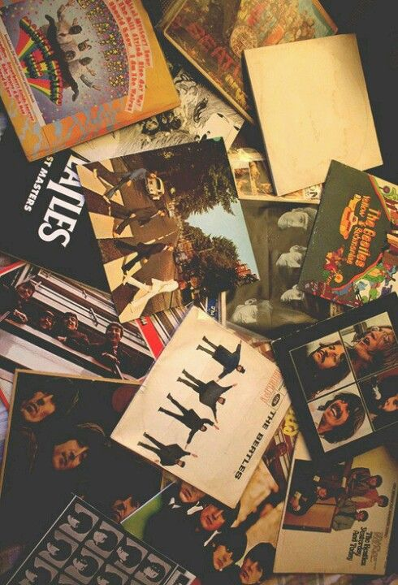

I PUT THE SAD IN QUESADILLA
Hola, Jumi here. Welcome to my website! It showcases who I am as a fangirl and a writer. It's mostly about my top favorites and some of my suggestions on different things. Hope you enjoy them! xx
TOP 10 BOOKS

FAV ALBUMS
BANDS